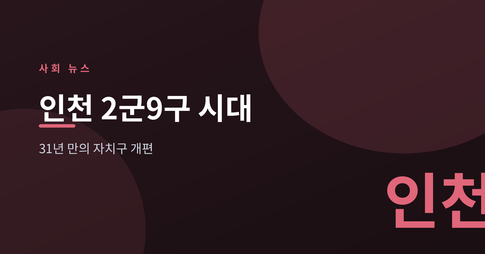
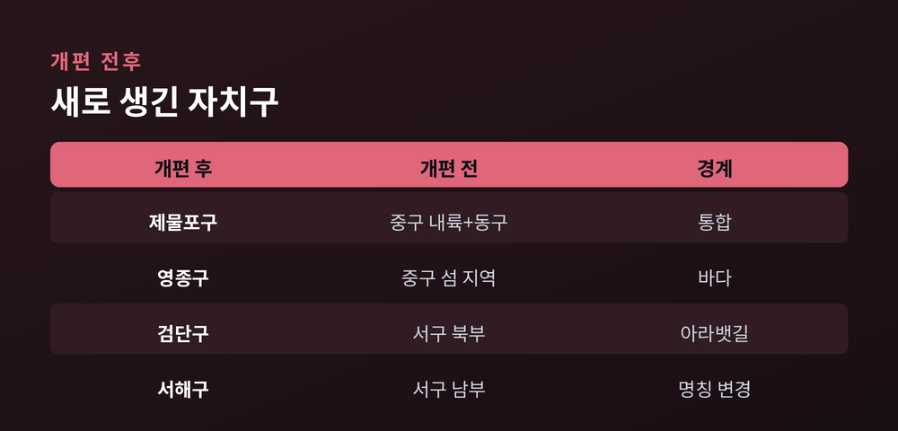
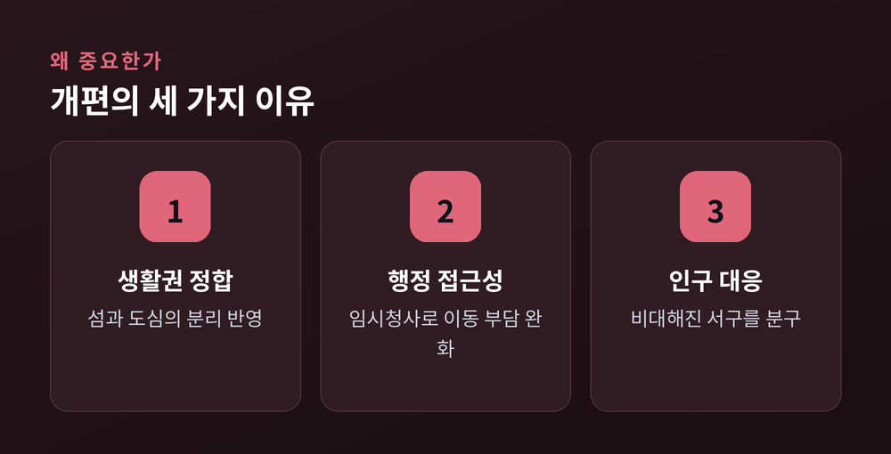
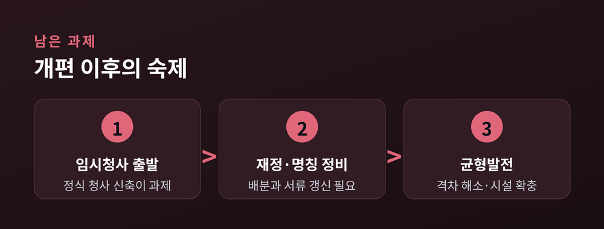

31년 만에 다시 그린 자치구 지도

이번 글에서는 7월 1일 시행된 인천 행정체제 개편을 정리해 보겠습니다. 오래 유지되던 '2군·8구'가 '2군·9구'로 바뀌었습니다. 무엇이 어떻게 달라졌는지, 왜 중요한지, 앞으로 무엇이 남았는지를 차분히 짚어 보려 합니다.
2026년 7월 1일부터 인천의 자치구 지도가 새로 그려졌습니다. 1995년 이후 이어져 온 '2군·8구'가 '2군·9구'로 재편된 것입니다. 자치구 개편으로는 31년 만의 큰 변화입니다. 새로 등장한 이름만 넷입니다. 제물포구, 영종구, 검단구, 서해구입니다.
바뀐 것은 크게 두 갈래입니다.
하나는 옛 중구와 동구입니다. 두 구의 내륙 지역은 하나로 합쳐 '제물포구'가 됐습니다. 인구 약 10만 명 규모로, 신포동 옛 중구청사와 송림동 옛 동구청사를 함께 씁니다. 반면 바다로 나뉜 영종도 일대는 따로 떼어 '영종구'로 신설됐습니다. 인구는 약 13만 명입니다.
다른 하나는 옛 서구입니다. 경인 아라뱃길을 기준으로 북부는 '검단구'로 분구됐습니다. 검단동 등 8개 동, 약 27만 명 규모입니다. 남은 남부 지역은 이름을 바꿔 '서해구'가 됐습니다. 청라와 루원시티, 원도심을 아우르는 약 39만 명의 구입니다.
미추홀·연수·남동·부평·계양구와 강화·옹진 두 군은 그대로입니다. 통합과 분구, 신설과 개명이 한 번에 맞물린 셈입니다.

이번 개편의 뿌리는 '생활권과 행정구역의 어긋남'입니다.
영종도가 대표적입니다. 섬 주민은 바다 건너 도심의 구청을 바라봐야 했습니다. 생활은 섬 안에서 이뤄지는데, 행정의 중심은 바다 건너에 있었던 것입니다. 별도 자치구가 생기면서 생활권과 행정구역이 비로소 맞물립니다. 7월 1일부터 영종구와 검단구에는 임시청사가 문을 열어, 먼 길을 오가는 부담이 줄어듭니다.
인구도 이유입니다. 옛 서구는 인구가 66만 명을 넘길 만큼 불어나 한 구가 감당하기 버거웠습니다. 검단구 분구는 그 무게를 나눈 셈입니다.
또 하나 눈여겨볼 대목이 있습니다. 이번 개편은 정부가 위에서 내린 것이 아니라, 지자체가 먼저 설계하고 정부가 동의해 이뤄졌습니다. 지방자치가 주도한 첫 사례로 꼽힙니다.

명패는 바뀌었지만, 체감은 이제부터입니다.
신설 구 상당수가 임시청사로 출발했습니다. 영종구는 민간 건물을, 검단구는 임차한 모듈러 건물을 당분간 청사로 씁니다. 정식 청사를 짓고 조직과 인력을 정비하는 일이 남아 있습니다. 분구에 따른 재정 배분, 주소와 명칭 변경에 맞춘 주민과 기업의 서류 갱신도 뒤따르는 과제입니다. 작은 불편이 한동안 이어질 수 있습니다.
지역마다 숙제도 다릅니다. 서해구는 청라·루원시티라는 신도시와 원도심 사이의 격차를 좁혀야 합니다. 검단구는 빠르게 느는 인구에 맞춰 교통·문화·복지 시설을 서둘러 채워야 합니다. 같은 개편이라도 구마다 마주한 현실은 다른 셈입니다.
물론 한계도 있습니다. 경계를 다시 긋는 것만으로 생활이 곧장 나아지지는 않습니다. 편익은 결국 인프라가 얼마나 빨리 뒤따르느냐에 달려 있습니다.

끝으로 한 마디만 더 드리겠습니다. 이번 개편은 도시가 자라며 벌어진 틈을 뒤늦게 메우는 작업입니다. 이름이 바뀐 자리에 생활의 편의가 실제로 채워질 때, 개편은 비로소 완성될 것입니다.
— 지도는 하루 만에 바뀌었지만, 그 위의 삶이 바뀌는 데는 조금 더 시간이 걸립니다.
새 이름표를 단 인천이 어떤 도시로 자리 잡을지, 천천히 지켜볼 만합니다.
참고 출처: 인천광역시, 경향신문, 인천투데이, 국민일보, 오마이뉴스